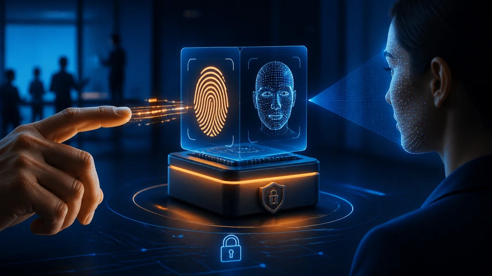
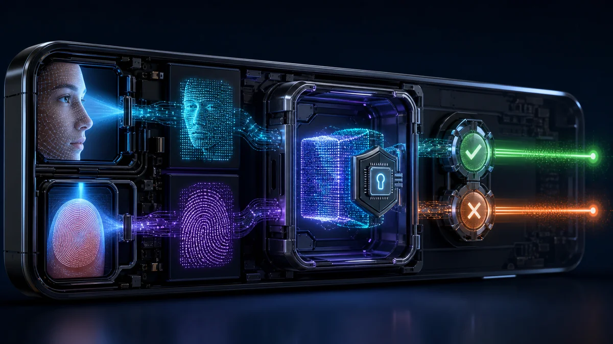
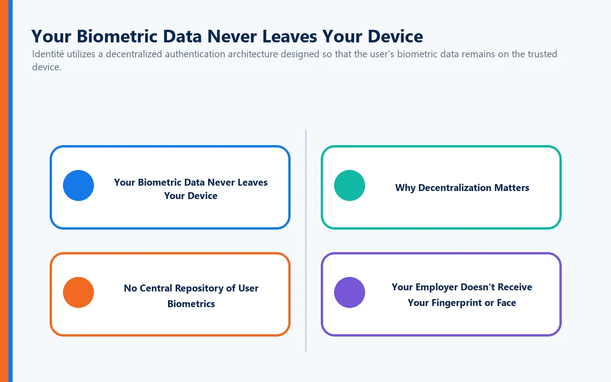
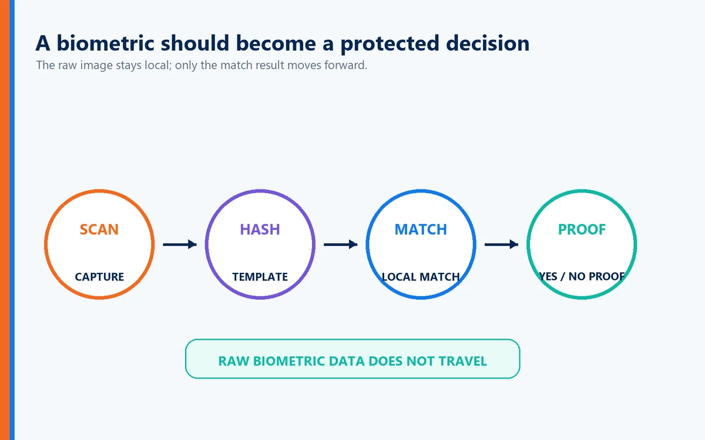
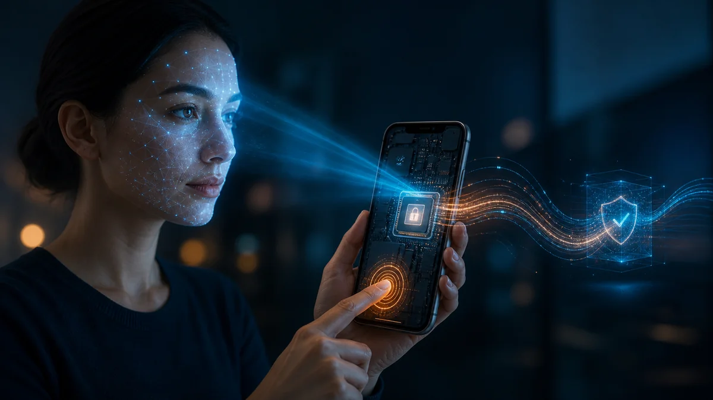
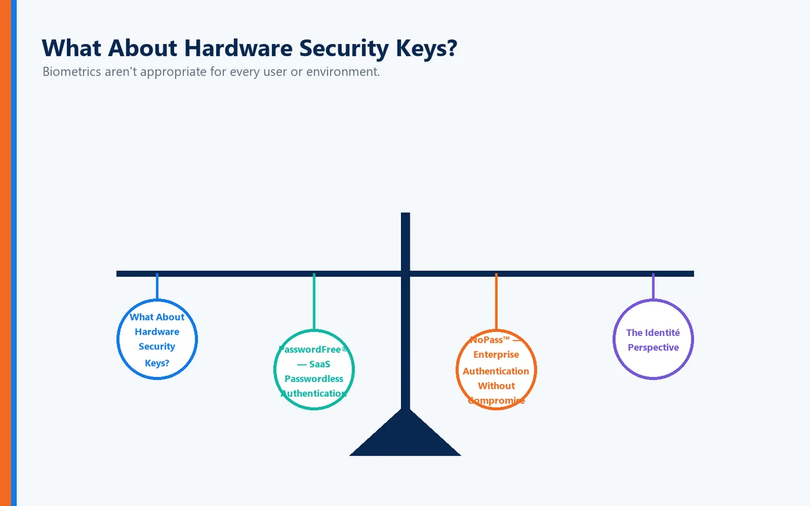

Touch your phone's fingerprint sensor and it unlocks.
Glance at the screen and facial recognition gives you access.
The experience happens so quickly that most of us rarely think about what is occurring behind the scenes.
But biometric authentication raises several important questions:
How does a computer actually know that a fingerprint or face belongs to you?
Where does that biometric information go?
And perhaps most importantly:
Is biometric authentication really secure?
The answer begins with understanding what biometrics actually do.
A well-designed biometric system doesn't simply take a photograph of your fingerprint or face and send that image across the Internet. Instead, it measures distinctive physical characteristics, creates a mathematical representation of those characteristics, and compares that representation with previously enrolled biometric information.
When implemented correctly, biometrics can provide a remarkably convenient way to establish that the person attempting authentication is the authorized user.
But biometrics are only part of the authentication equation.
Recognizing the user doesn't necessarily prove that the website or application requesting authentication is legitimate.
That distinction becomes increasingly important in an era of phishing, lookalike domains, imposter websites, and sophisticated social engineering.
And there is another equally important consideration:
Your biometric information is uniquely yours. Where—and how—it is stored matters.
What Is Biometric Authentication?
Biometric authentication verifies identity using measurable physical or behavioral characteristics associated with an individual.
Common examples include:
Fingerprints
Facial recognition
Iris recognition
Voice recognition
Palm or vein patterns
Fingerprint and facial recognition are by far the biometric technologies most consumers encounter today.
Instead of asking:
"What do you know?"
as a password does, biometric authentication essentially asks:
"Can the system establish that you are the person associated with this identity?"
That eliminates one of the biggest problems with passwords.
People forget passwords.
People reuse them.
People share them.
And criminals steal them.
Your fingerprint doesn't have any of those problems.
How Fingerprint Authentication Works
Your fingerprint contains distinctive patterns created by ridges and valleys in the skin.
These patterns contain identifiable characteristics known as minutiae, including features such as:
Ridge endings
Ridge bifurcations
Relative positions
Pattern orientation
When you initially enroll a fingerprint, the sensor captures characteristics of that fingerprint and the system converts those characteristics into a mathematical representation—often referred to as a biometric template.
That template becomes the reference used for future authentication.
Conceptually, the process looks like this:
Fingerprint → Biometric Characteristics → Mathematical Template → Comparison → Authentication Decision
When you later touch the fingerprint sensor, the device captures another sample and compares characteristics from that sample with the enrolled template.
If the similarity falls within the system's acceptable threshold, biometric verification succeeds.
Your Fingerprint Doesn't Have to Be Identical Every Time
This surprises many people.
Biometric authentication generally isn't looking for a perfectly identical image.
Think about placing your finger on a sensor.
Your finger may be:
Slightly rotated
Positioned differently
Wet
Dry
Partially covering the sensor
The system therefore evaluates whether the newly captured biometric characteristics are sufficiently similar to the enrolled template.
That introduces two important concepts.
False Acceptance
The system incorrectly accepts someone who isn't the authorized user.
False Rejection
The system incorrectly rejects the legitimate user.
Biometric system designers must balance convenience against security by determining how closely a new biometric sample must match the enrolled biometric information.
How Facial Recognition Works

Facial recognition follows a similar principle but analyzes characteristics of the face rather than fingerprint ridges.
Depending on the technology, the system may evaluate features such as:
Facial geometry
Relative positions of facial features
Depth information
Facial contours
Distances between key facial landmarks
More sophisticated systems may use infrared sensors, depth mapping, or other technologies to distinguish an actual person from a photograph.
During enrollment, the system creates a mathematical representation of the user's facial characteristics.
Later, when authentication occurs, the system captures a new sample and compares it with the enrolled biometric representation.
Again, the objective isn't simply:
"Does this look like a face?"
It's:
"Does this biometric measurement sufficiently match the enrolled identity?"
What About Someone Holding Up Your Photograph?
This is where liveness detection becomes important.
A poorly designed facial-recognition system could potentially be fooled by:
A photograph
A video
A mask
A digitally generated image
Modern biometric systems can employ techniques intended to determine whether the biometric sample comes from a live person rather than a reproduction.
Depending on the technology, liveness detection may evaluate:
Depth
Movement
Infrared characteristics
Three-dimensional facial structure
Other indicators of physical presence
As artificial intelligence and deepfake technology continue improving, strong liveness detection will become increasingly important.
Are Biometrics More Secure Than Passwords?
Biometrics offer several major advantages.
You don't have to remember your fingerprint.
You can't accidentally type your face into a phishing website.
And employees don't have to create yet another password.
But biometrics also have an important characteristic organizations cannot ignore:
You can change a password. You can't easily change your fingerprint or face.
That means biometric information deserves particularly strong protection.
Organizations implementing biometric authentication should ask:
Where is biometric information stored?
Are raw biometric images retained?
How are biometric templates protected?
Does biometric information leave the device?
How is enrollment secured?
Who can access biometric information?
What happens when biometric authentication fails?
What recovery mechanisms are available?
Biometrics can be powerful authentication tools.
But implementation matters enormously.
Privacy Matters With Biometrics
Biometric authentication introduces an important question that every organization and user should ask:
"What happens to my biometric information after I enroll?"
This matters because biometric characteristics are fundamentally different from passwords.
A compromised password can be changed.
You cannot simply replace your fingerprint or face.
For that reason, Identité approaches biometric authentication with a fundamentally different security philosophy:
Your biometric information should remain under your control.
Your Biometric Data Never Leaves Your Device

Identité utilizes a decentralized authentication architecture designed so that the user's biometric data remains on the trusted device.
When a fingerprint or facial-recognition method is used as part of the authentication process, the biometric data does not need to be transmitted to Identité, the employer, or a centralized biometric database.
Instead:
Your biometric data stays on your device.
This provides an important privacy and security advantage.
Rather than collecting biometric information from thousands—or potentially millions—of users into one centralized repository, Identité's decentralized approach avoids creating that kind of centralized biometric target.
Why Decentralization Matters
Centralized databases are attractive targets for cybercriminals because compromising one system can potentially expose information belonging to many users.
Biometric information deserves even greater protection because of its permanence.
If criminals steal a password, the password can be changed.
If biometric information is compromised:
You can't issue someone a new face or fingerprint.
Keeping biometric information on the user's trusted device helps reduce that risk.
Instead of asking:
"How do we build a bigger database to protect everyone's biometrics?"
Identité takes a different approach:
"Why centralize the biometric data in the first place?"
No Central Repository of User Biometrics
Identité's decentralized approach provides several important security and privacy advantages:
Biometric data remains on the user's device.
Biometric information does not need to be transmitted across the network for centralized matching.
A centralized repository of users' biometric data is avoided.
An attack against a centralized authentication server does not automatically expose a database containing users' fingerprints or facial biometric data.
Organizations reduce the concentration risk associated with maintaining large repositories of sensitive biometric information.
Employees maintain greater privacy because their biometric information remains associated with the device performing biometric verification.
This follows an important cybersecurity principle:
Sensitive information that isn't collected centrally can't be stolen from a centralized repository.
Your Employer Doesn't Receive Your Fingerprint or Face

This distinction is particularly important in workplace environments.
When biometric authentication is used with Identité's architecture, the purpose is to establish that the authorized person is present—not to provide an employer with a copy of that person's biometric characteristics.
The biometric verification occurs on the trusted device.
The authentication system needs the result necessary to continue the authentication process—not a centralized collection of employees' fingerprints or facial data.
That creates a clearer separation between:
Identity verification
and
biometric surveillance.
The objective is authentication, not collecting employees' physical characteristics.
Biometrics Don't Solve Every Authentication Problem
There's another important consideration.
Suppose your phone successfully recognizes your face.
The device now has strong evidence that:
You are you.
But consider another question:
Do you know that the website requesting authentication is really your bank, employer, hospital, or business application?
That's a completely different security problem.
Cybercriminals increasingly create sophisticated:
Phishing websites
Lookalike domains
Cloned login pages
Fake corporate portals
Brand-impersonation sites
A biometric can help authenticate the user.
It doesn't necessarily authenticate the destination.
And that's where the distinction between biometric authentication and mutual authentication becomes critical.
What Is Full Duplex Authentication®?

Full Duplex Authentication® (FDA) is the patented authentication technology powering PasswordFree®, Identité's Software-as-a-Service (SaaS) authentication solution, and NoPass™, its PaaS solution that can be deployed on premises or in the cloud.
Full Duplex Authentication® goes beyond simply verifying the user. It establishes mutual authentication, meaning the user must authenticate to the legitimate application or website and the application or website must authenticate itself as legitimate as well.
FDA can work as part of a modern authentication environment in which trusted devices, biometrics, and other approved authentication mechanisms establish user identity while mutual authentication establishes trust on both sides of the transaction.
This addresses an important weakness in conventional authentication.
Knowing who the user is solves only half of the trust problem.
Biometrics + Mutual Authentication
Consider what happens when biometrics and Full Duplex Authentication® work together.
The biometric can help establish:
"This is the authorized user."
The trusted device participates in establishing:
"This is the authorized device."
And Full Duplex Authentication® additionally establishes:
"This is the legitimate website or application."
That creates a fundamentally different authentication model.
Authentication isn't based exclusively on one side proving itself to the other.
Trust works in both directions.
Why This Matters for Phishing and Imposter Websites
Imagine an attacker creates an almost perfect copy of your company's login page.
The attacker may successfully duplicate:
The company logo
The colors
The HTML
The login screen
The branding
The overall user experience
They may even register a domain that looks almost identical to the legitimate company's domain.
To a human being, the fake website may appear completely legitimate.
But copying appearance isn't the same as proving identity.
The imposter website cannot successfully perform the legitimate site's side of Full Duplex Authentication®.
The fake site may look real.
It cannot authenticate as real.
That distinction provides an important layer of protection against modern phishing and lookalike-domain attacks.
Decentralized Authentication + Full Duplex Authentication®
This is where Identité's approach becomes particularly powerful.
The biometric helps establish:
"This is the authorized user."
The trusted device participates in establishing:
"This is the authorized device."
Full Duplex Authentication® establishes:
"This is the legitimate destination."
And the decentralized architecture ensures:
"The user's biometric data remains on the user's device."
Together, these capabilities address multiple components of digital trust rather than relying on a single credential.
Privacy by Architecture, Not Just Policy
Many technology companies promise to protect sensitive information through privacy policies.
Policies matter.
But architecture matters even more.
A privacy policy tells you what an organization promises not to do with your biometric information.
A decentralized architecture can reduce the need for that biometric information to leave your device in the first place.
That's an important distinction.
Identité's approach isn't simply:
"Trust us with your biometrics."
It's:
"Your biometric data stays on your device."
For organizations evaluating biometric authentication, that can provide a significant advantage in protecting employee privacy, reducing centralized biometric-data exposure, and limiting the potential consequences of an attack against centralized authentication infrastructure.
Biometrics Should Be Part of a Larger Security Architecture

Organizations shouldn't evaluate biometric authentication in isolation.
The better question isn't:
"Should we use fingerprints or passwords?"
It's:
"How do we build an authentication environment in which every component reinforces trust?"
That can include:
Biometrics
Trusted devices
Hardware security keys
Passwordless authentication
Mutual authentication
Decentralized identity verification
Secure recovery mechanisms
Risk-based security policies
The objective isn't simply replacing one login method with another.
It's removing weak points from the entire authentication process.
What Happens When Biometrics Don't Work?
Fingerprint and facial recognition are convenient, but no authentication method works perfectly in every situation.
A user might:
Injure a finger
Wear protective gloves
Work in an environment unsuitable for facial recognition
Experience a device sensor failure
Lose the authentication device
Replace a smartphone
A secure authentication strategy therefore needs recovery mechanisms that don't undermine the security of the primary authentication method.
This is where business continuity becomes critical.
Emergency PIN Authentication
When permitted by organizational policy, authentication powered by FDA can provide an Emergency PIN when a primary authentication device or method is temporarily unavailable.
The Emergency PIN isn't intended to replace normal passwordless or biometric authentication.
It provides a controlled continuity mechanism designed to prevent an authentication problem from becoming a business interruption.
A lost phone, damaged biometric sensor, or unavailable device shouldn't automatically become a lost workday.
Secure Backup & Restore
Replacing a phone shouldn't require rebuilding an authentication environment from scratch.
With PasswordFree® and NoPass™, users can securely back up their authentication profile according to the organization's configuration to:
Secure cloud storage
The corporate network
When a replacement device is obtained, the authentication profile can be restored to the new phone.
The restoration can be completed in less than two minutes.
That can dramatically reduce:
User downtime
Help desk calls
Administrative workload
Authentication re-enrollment
Business interruption
Security should anticipate failure—not simply react to it.
What About Hardware Security Keys?

Biometrics aren't appropriate for every user or environment.
Some organizations prefer physical authentication devices, particularly for:
Privileged administrators
High-security employees
Financial environments
Healthcare facilities
Government users
Locations where smartphones are restricted
Identité is also compatible with supported third-party hardware tokens, including security keys such as YubiKey®.
This allows organizations to build authentication policies around their actual security and operational requirements rather than forcing every employee into the same authentication method.
PasswordFree® — SaaS Passwordless Authentication
Organizations seeking a cloud-delivered authentication solution can choose PasswordFree®, Identité's SaaS offering.
PasswordFree® is designed to provide:
Passwordless authentication
Decentralized biometric verification
Reduced credential dependency
Mutual authentication powered by FDA
Emergency PIN Authentication
Secure Backup & Restore
Simplified administration
Improved business continuity
The objective is stronger authentication without adding unnecessary friction to the user's workday.
NoPass™ — Enterprise Authentication Without Compromise
Enterprises requiring greater control can choose NoPass™, powered by patented Full Duplex Authentication®.
NoPass™ can be deployed on premises or in the cloud and is designed for organizations requiring integration with environments such as:
Microsoft Active Directory
Microsoft Entra ID
Microsoft 365 / Office 365
Microsoft Azure
For organizations with strict requirements surrounding sensitive information—particularly banks, financial institutions, healthcare organizations, government agencies, and other highly regulated enterprises—an on-premises NoPass™ deployment provides an option for maintaining authentication infrastructure within the organization's own controlled environment.
The Identité Perspective
Biometric authentication represents an important evolution in identity security.
Fingerprints and facial recognition can eliminate much of the friction associated with passwords while providing a natural and convenient way for users to establish their identity.
But biometrics shouldn't be viewed as the entire authentication solution.
And biometric convenience should never require users to surrender unnecessary control over their most personal identifying characteristics.
That's why Identité utilizes a decentralized authentication architecture in which biometric data remains on the user's device rather than being collected into a centralized biometric repository.
The biometric helps establish:
"I am the authorized user."
The trusted device participates in establishing:
"This is the authorized device."
And patented Full Duplex Authentication® establishes:
"This is the legitimate destination."
Together, these capabilities create a fundamentally different approach to digital trust.
Through PasswordFree® and NoPass™, Identité combines decentralized biometric authentication, mutual authentication, compatible third-party hardware tokens, Emergency PIN Authentication, and Secure Backup & Restore into an authentication architecture designed around security, privacy, productivity, and business continuity.
Because the future of authentication shouldn't require you to send your most personal identity information somewhere else to prove who you are.
Your biometric data stays with you.
And trust works both ways.